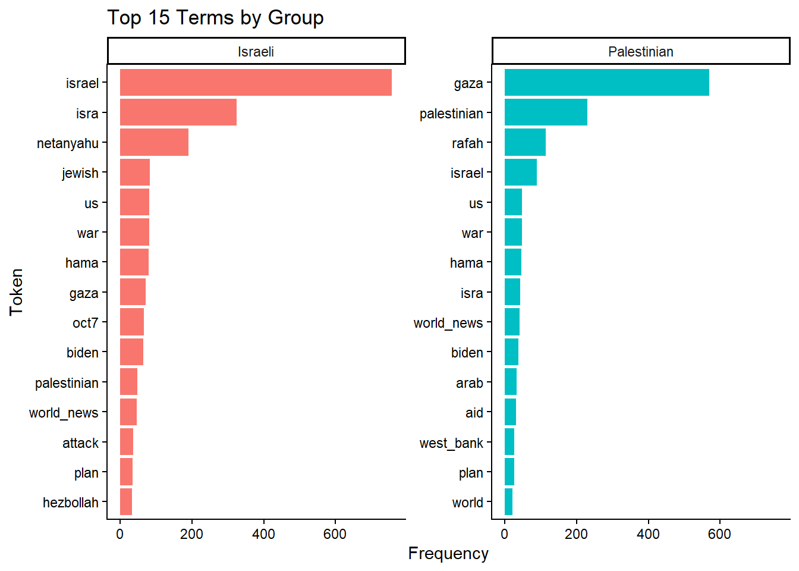
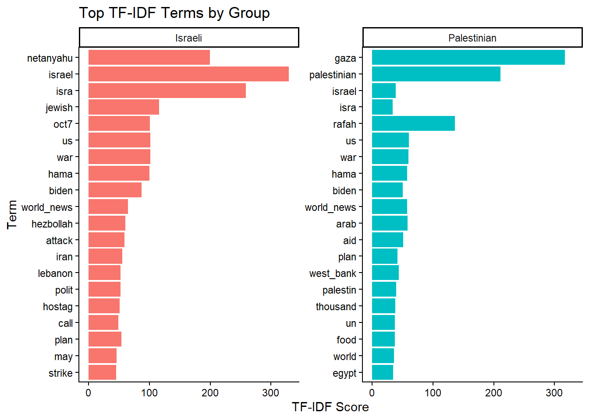
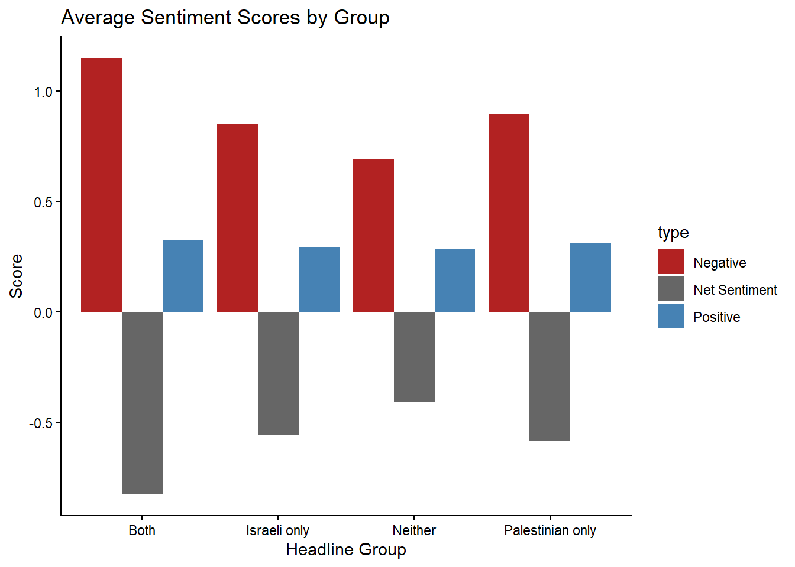
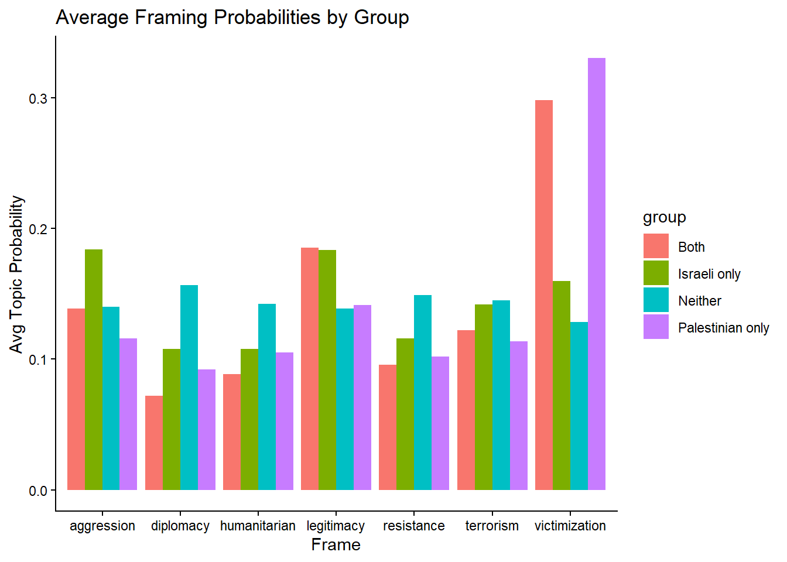
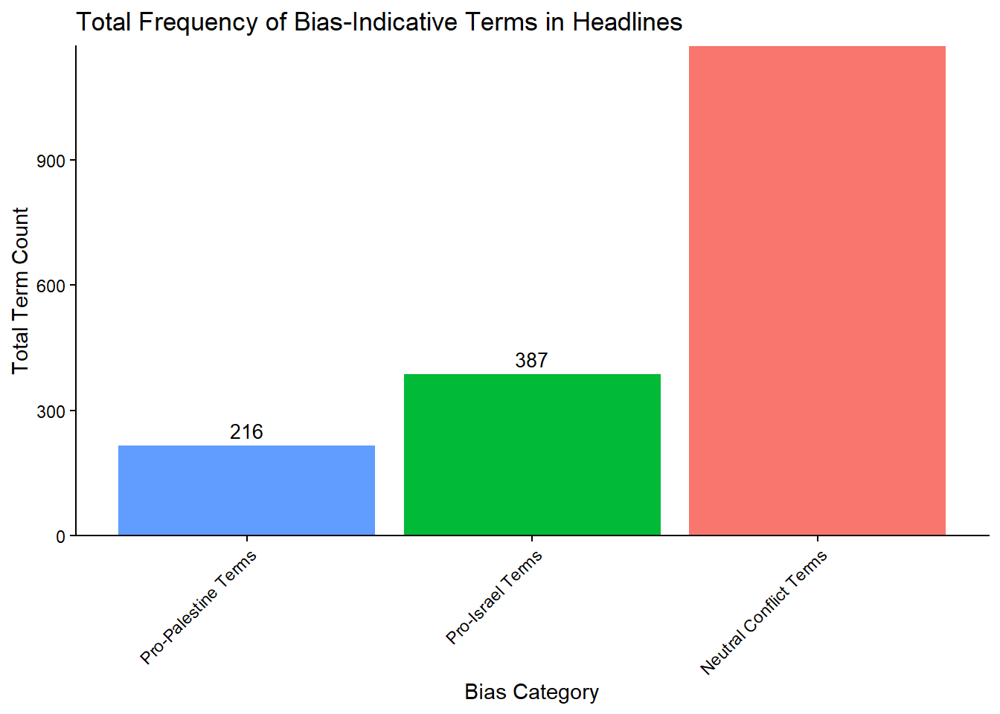
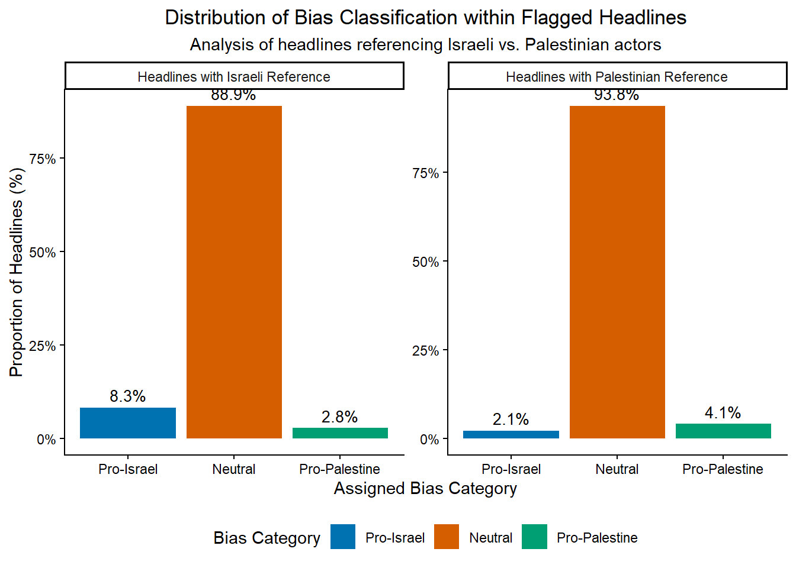

Text Analsyis of US Media Coverage of the Israel–Hamas Conflict
POL 290G: Final Paper | Spring 2025
1 Introduction
Scholars and media critics have argued that U.S. newspaper coverage of the Israel–Palestine conflict has long reflected a systemic bias in favor of Israel and against Palestinians — a trend that critics claim has been exacerbated since the attacks on October 7th. This critique is rooted in both the language used and the structural absences in how events are reported, most notably the reporting of Palestinian deaths at the hands of the Israeli government. Mearsheimer and Walt (2007) argue in The Israel Lobby that “the American media’s coverage of Israel tends to be strongly biased in Israel’s favor,” a claim echoed by Rashid Khalidi (2021) in The Hundred Years’ War on Palestine, which documents consistent anti-Palestinian framing in prominent outlets like The New York Times. Bazian (2015) further situates anti-Palestinian media narratives within broader Islamophobic currents in U.S. mainstream discourse.
In their passage in Blaming the Victims (2001), Edward Said and Noam Chomsky argue that Orientalist assumptions continue to shape how Palestinian violence is reported — with events often being stripped of historical or humanitarian context while Israeli state violence is either omitted or framed as justified defense. They contest that media narratives routinely cast Palestinians as instigators and Israelis as defenders, even when the opposite may be true.
Research surrounding conflict in the region, such as the first and second intifada, as well as research without temporal constraints, have made similar claims of U.S. media coverage tending to disproportionately emphasize Israeli perspectives and narratives. As an example, Zelizer et al. (2002) found that The New York Times tended to portray Israelis as victims and Palestinians as aggressors in its headlines, and Ackerman (2001) observed a “systematic absence of context” in U.S. coverage of Palestinian suffering.
Following Hamas’s attacks on Israel on October 7, 2023, Israel launched a sustained military campaign on Gaza that, according to Amnesty International, killed over 42,000 Palestinians by October 2024—including more than 13,300 children—and injured nearly 100,000 others. Amnesty reports that many of these deaths occurred in direct or deliberately indiscriminate attacks, often annihilating entire multigenerational families. Israel’s bombardment also caused what experts describe as “unprecedented destruction,” leveling entire cities, destroying agricultural land, religious and cultural sites, and rendering much of Gaza uninhabitable. The humanitarian toll of this conflict, particularly its scale and intensity, alongside the legacy of asymetric presentation of the Israel–Palestine conflict in U.S. media, creates an opportunity to analyze how these narratives are constructed and disseminated in the context of a major escalation.
Additional papers have found a similar pattern with the coverage of Palestinian deaths after October 7th, finding the New York Times had consistently mentioned Israeli deaths more often than Palestinian deaths overall from 10/7 to 10/22, and that on average, about four Palestinians died per each mention of Palestinian deaths in The New York Times. On the other hand, Israeli deaths were matched almost exactly one-for-one by the Times. As well there were large differences in the rhetoric between the two groups, with the word “slaughter” being used 53 times in these articles since 10/7 to describe the deaths of Israelis and zero times to describe the death of Palestinians. The word “massacre” shows up 24 times in reference to Israelis and once in reference to Palestinians in the tagged sentences. The articles rarely mention the names of Palestinians who die, often framing their deaths in dehumanizing terms like “mourner”, “resident”, “assailant” or “militant”.
Hypothesies and Motivations
This project investigates how major U.S. newspapers framed the Israel–Hamas conflict in the immediate aftermath of the October 7, 2023 attacks by analyzing the reader’s initial impression — the headline. I hypothesize that the language used to describe Israeli and Palestinian actors in the headlines of US news media diverges systematically along dimensions of sentiment and framing—particularly in the attribution of aggression, victimhood, and legitimacy. The aim is to measure differences in tone, emotional framing, and lexical patterns across the headlines which referencing Israeli and Palestinian actors, and in doing so, to evaluate whether coverage aligns with or departs from the humanitarian realities reported by organizations such as Amnesty International.
Through this analysis, I seek to quantify whether and how U.S. newspapers exhibit differential portrayals of the two sides. Specifically, I focus on whether Israeli and Palestinian actors are presented with distinct emotional tones, topic emphases, and narrative frames in mainstream media coverage between October 7 and December 31, 2023. By isolating and comparing these textual signals, the study aims to uncover asymmetries in representation that may suggest underlying media bias.
\[ \begin{array}{l} H_0\text{: There is no systematic difference in the language used to describe Israeli and Palestinian actors} \\ \text{in U.S. newspaper coverage of the Israel–Hanas conflict} \\ \\ H_1\text{: There is a systematic difference in the language used to describe Israeli and Palestinian actors} \\ \text{in U.S. newspaper coverage of the Israel–Hamas conflict} \end{array} \]
The latent variable of interest is media framing bias, which I define here as the implicit patterns in journalistic language that portray one group as more legitimate, victimized, aggressive, or responsible than the other. While existing literature suggests that the absence of linguistic asymmetry in coverage of the Israel–Palestine conflict can obscure the effect of the disproportionate death toll and destruction inflicted by the Israeli military, this paper does not evaluate omissions or false equivalencies. Instead, it focuses solely on assessing the language that is present in mainstream coverage during the period of analysis.
2 Corpus and Data Source
To construct the corpus for analysis, I used the ProQuest U.S. Major Dailies database to retrieve news article headlines published within the year following the beginning of the conflict, between October 7, 2023 and October 7, 2024. In the ProQuest database, I searched for articles containing references to the conflict using a Boolean query that captured both geographic and conflict-related keywords. The following search was used to retrieve relevant articles from the ProQuest U.S. Major Dailies database:
(“Israel” OR “Palestine” OR “Gaza” OR “Hamas” OR “West Bank” OR “Israel-Hamas” OR “Israel-Gaza”) AND (“war” OR “conflict” OR “attack” OR “bombing” OR “ceasefire” OR “hostage” OR “invasion” OR “crisis” OR “aid”) AND LA(english)
From this I created a corpus with an n of 10,861 articles that were published in the U.S. Major Dailies collection during the specified time period. The search was designed to capture a wide range of articles related to the Israel–Palestine conflict, restricted to articles in English and to the following newspapers: The New York Times, Washington Post, Los Angeles Times, Wall Street Journal, Boston Globe, Chicago Tribune, San Francisco Chronicle, among others included in the U.S. Major Dailies collection. I further filtered the results to include only relevant article types, including only news reports, editorials, commentaries, and features, while excluding obituaries, multimedia clips, and corrections. The resulting dataset represents a curated collection of mainstream media coverage of the Israel–Palestine conflict during the defined time period.
Unfortunately, due to most newspapers’ terms and conditions on data scraping, the original source data cannot be shared from ProQuest TDM Studio.
3 Methodology
Once collected, the articles were pre-processed in R using the quanteda package. The unit of analysis was the paragraph, which allowed for finer-grained comparisons of framing within individual documents. After constructing a corpus, I applied a series of standard pre-processing steps summarized by the acronym P-N-L-W-S-C:
- P – Removed punctuation and symbols to clean the text and reduce noise.
- N – Removed numbers to eliminate irrelevant numerical tokens.
- L – Applied normalization by converting all words to lowercase.
- W – Removed stopwords, including both standard English stopwords and a custom list (e.g., “Mr.,” “said,” and outlet names like New York Times) to eliminate high-frequency but semantically weak terms.
- S – Applied stemming to unify word forms (e.g., “Israeli,” “Israelis” → “israel”).
- C – Identified and compounded multi-word expressions (collocations) to treat them as single units (e.g., ‘Gaza Strip’ -> ‘gaza_strip’)
Before tokenization and stemming, I included key abbreviations and dates that commonly occur within the data Terms like ‘U.S.’ were standardized to ‘US’, ‘U.N.’ to ‘UN’, and ‘Oct. 7’ to ‘oct7’ through a targeted substitution process. This ensured these critical entities were treated as single, coherent units throughout the analysis.
I then created a document-feature matrix (DFM), built from the stemmed and compounded tokens, ensuring that all features (words and collocations) were in their standardized, processed form before further grouping. I then applied the Lexicoder Sentiment Dictionary (LSD2015) to the DFM for downstream analysis.
For identifying mentions of Israeli or Palestinian actors, I used a distinct pre-processing approach to create binary flags (has_israeli and has_palestinian). Rather than creating separate corpora for each group, I flagged each paragraph in the main DFM. These flags were generated by searching the stemmed versions of the initial tokens for specific identifiers. This process allowed for improved matching across different word forms.
- For Israeli references, the list of identifiers included: “Israel,” “Israeli,” “Jewish,” “Tel Aviv,” “Jerusalem,” “Netanyahu,” and “oct7.”
- For Palestinian references, the list included: “Palestine,” “Arab,” “Palestinian,” “Palestinians,” “Gaza,” “Gaza Strip,” and “Rafah.”
Each paragraph was labeled as has_israeli, has_palestinian, or both, depending on the presence of these identifiers. This tagging structure enabled comparative analysis without fragmenting the corpus.
I then conducted a multi-step textual analysis. First, I calculated TF-IDF scores separately for Israeli- and Palestinian-flagged paragraphs to uncover distinctive lexical patterns. Second, I performed sentiment analysis using LSD2015 to compare emotional tone between the two sets of paragraphs. Third, I applied both unsupervised and seeded Latent Dirichlet Allocation (LDA) models to identify recurring themes and frames. The seeded LDA model used a custom dictionary of terms representing common narratives, including frames of victimization, terrorism, occupation, and resistance, to better understand how each group was portrayed.
Finally, I constructed a smaller dictionary categorizing headline terms as Israeli-related, Palestinian-related, or neutral. I counted the frequency of these tags in headlines and compared the distribution to my own bias coding, using the proportion of conflict terms present in each category. This comparison enabled a rough check of how headline framing aligned with broader sentiment and topic patterns in the full-text articles.
4 Results
Word Frequencies by Group
To explore differences in how Israeli and Palestinian actors are framed, I analyzed the most frequent terms in headlines tagged as referencing each group.
The figure above shows the top 15 terms in each subset. While many of the terms among the two groups are similar, their frequency and context among the other terms differ.
In headlines referencing Israeli actors, the most prominent terms include “israel,” “isra,” “netanyahu,” and “jewish.” These terms suggests a framing that contextualizes the mention of Isreal by its national identity, political leadership, and religious character rather than the conflict or its US relations. As well, terms such as “gaza,” “war,” and “attack” having similar frequencies to “oct7” indicate that coverage is heavily framed in the events of October 7, 2023. This centering of Israeli hardship creates a narratives centered around Israel’s response to violence, rather than its disproportionate enactment of it. Other terms such as “hezbollah,” “biden” and “us” further points to a broader geopolitical framing that positions Israel as an actor in a regional security context.
While the first mention of any Palestinian actor within Israeli-tagged headlines does not appear until the 7th and 8th most frequent terms, with “hama” and “gaza,” in Palestinian-tagged headlines, the terms “rafah” and “israel” emerge as the most frequent after basic identifiers. While “rafah” may be in reference to the humanitarian crisis which occured in the region, its high frequency in contrast with terms such as “aid” and “world” more likely reflects the political tensions that between the Biden administration and Prime Minister Netanyahu over Israeli military actions in southern Gaza than the crisis itself.
This centering of Israeli and U.S. politics within Palestinian-tagged content suggests that Palestinians are often framed in relation to external state powers, rather than as autonomous political actors. Additionally, terms such as “aid,” “west_bank,” and “arab” emphasize a humanitarian and geographic lens, rather than one focused on leadership, institutional authority, or national sovereignty. This contrast reinforces a broader asymmetry in media framing, where Israeli actors are presented with a clear state identity, while Palestinian actors are often represented through crisis, dependency, or relation to foreign governments.
TF-IDF
To further explore the differences in sentiment between the two groups, I calculated TF-IDF scores for each group and visualized the top terms. As opposed to the basic term-frequency analysis, TF-IDF scores works to identify terms that are particularly distinctive to each group, rather than just the most frequent terms across both groups — helping to highlight any unique language used in headliens referencing Israeli and Palestinian actors.

The figure above presents the top 15 TF-IDF terms for each group, which reflects many of the same patterns as the word frequencies For Israeli-tagged headlines, prominent terms include “netanyahu,” “oct7,” “attack,” “hezbollah,” and “strike,” reflecting a framing centered on leadership, military action, and Israel’s role as a primary actor in the conflict. Notably, “hamas” is the only Palestinian actor to appear in the Israeli TF-IDF list, and it does so relatively low in the ranking—indicating that Palestinian actors are rarely discussed in detail within headlines focused on Israel. In contrast, Israeli terms dominate the Palestinian TF-IDF list: “israel” appears near the top, alongside “us” and “biden”, reinforcing the observation that Palestinian actors are often framed through the lens of external powers.
The Palestinian TF-IDF terms include words such as “gaza,” “rafah,” “aid,” “food,” “un,” and “egypt.” These reflect a humanitarian framing, where Palestinian experiences are depicted primarily in relation to crisis, displacement, and dependency. There is no mention of Palestinian leadership or political figures apart from “hamas,” suggesting a lack of narrative space for Palestinian agency or governance. The presence of “egypt” likely reflects Egypt’s geopolitical role in facilitating aid through the Rafah crossing, again positioning Palestinians as passive subjects in the actions of others.
Additionally Israeli TF-IDF set also includes terms regarding conflict such as “plan,” “strike,” and “attack,” which stands in direct contrast to the Palestinian terms which only includes the word “war.” While their prevalence may be due to a presentation of Israel as the aggressor, these terms occur far less than terms such as “oct 7” and “hamas,” words used to frame the conflict through the lens of retaliation. As a result, it suggests that violence occurring on both side is being filtered through the presentation of Israel as a justified victim within the conflict. As well, the contrast creates a framing of Israeli actors as strategic and active agents in the region, while Palestinian actors are framed primarily as subjects of violence or humanitarian crises.
Sentiment Analysis
In hopes of capturing the emotional tone of the headlines and the sentiment expressed towards Israeli and Palestinian actors, I applied sentiment analysis using the Lexicoder Sentiment Dictionary (LSD2015). This dictionary provides a set of positive and negative words that can be used to quantify sentiment in text. The sentiment scores were calculated for each headline in the DFM, and then aggregated to compare the average sentiment towards Israeli and Palestinian actors. Additionally, alongside the flag for either Israeli or Palestinian actors I created a binary flag for whether a headline mentioned both Israeli or Palestinian actors.

As shown in figure, the results reveal relatively small differences in average sentiment across groups. Headlines that reference both Israeli and Palestinian actors show slightly higher negative sentiment and lower net sentiment than those referencing only one side. However, overall variation is minimal.
While this finding may suggest some level of parity in emotional tone across the corpus, it also raises questions about the sensitivity of dictionary-based sentiment tools to the specific framing strategies used in conflict reporting. Words associated with violence (e.g., “airstrike,” “hostage,” “siege,” “retaliation”) may not be classified as inherently positive or negative in the dictionary but carry heavy connotative weight in the context of war. As such, future research should consider developing or supplementing existing sentiment dictionaries with custom lexicons tailored to conflict, war reporting, and humanitarian discourse. This would better capture the nuances of how language signals blame, legitimacy, or victimhood in journalistic framing.
Unsupervised Machine Learning (LDA Model) Results
To provide a broader view of the thematic content in the headlines, I applied an unsupervised Latent Dirichlet Allocation (LDA) model to identify recurring topics and patterns. LDA is a model that assumes each headline can be represented as a mixture of different topics, and each topic is defined as a distribution of words that frequently appear together. The topics are generated by clustering words that tend to co-occur across the corpus, finding patterns of which words occur togrther across the headlines in the corpus.
Because this stage of the analysis was primarily exploratory and intended to guide the later supervised model, I chose to group the terms into an arbitrary ten topics.
Topic 1 Topic 2 Topic 3 Topic 4 Topic 5 Topic 6
[1,] "trump" "leader" "israel" "attack" "israel" "us"
[2,] "us_news" "face" "say" "strike" "palestinian" "war"
[3,] "hous" "presid" "un" "border" "gaza" "israel"
[4,] "gop" "antisemit" "us" "hezbollah" "aid" "iran"
[5,] "vote" "elect" "peac" "iran" "west_bank" "talk"
[6,] "end" "nation" "critic" "lebanon" "fear" "take"
[7,] "school" "china" "want" "offici" "world" "shift"
[8,] "speaker" "back" "washington" "kill" "hospit" "get"
[9,] "senat" "colleg" "group" "conflict" "civilian" "home"
[10,] "parti" "now" "blinken" "target" "isra" "use"
Topic 7 Topic 8 Topic 9 Topic 10
[1,] "biden" "hama" "protest" "gaza"
[2,] "democrat" "world-wid" "state" "isra"
[3,] "netanyahu" "plan" "campus" "world_news"
[4,] "ukrain" "fight" "amid" "war"
[5,] "polit" "israel" "student" "us"
[6,] "deal" "show" "univers" "first"
[7,] "alli" "harri" "tension" "forc"
[8,] "campaign" "american" "test" "death"
[9,] "make" "call" "polic" "militari"
[10,] "call" "hostag" "jewish" "year" From the unsupervised LDA model, I identified several coherent topics many of which centered around the United States and its domestic politics or foreign policy. As an example, Topics 1, 3, 6, and 7 included terms that pointed toward American political debates and policy responses. Similarly, Topics 2 and 9 were dominated by terms related to student protests within the United States.
Only two of the ten topics focused directly on the Israel–Hamas conflict without a strong U.S. framing. Topic 4 captured Israel’s external conflicts and regional military engagements, with words such as “Lebanon,” “Hezbollah,” “kill,” and “target.” Topic 5 highlighted humanitarian concerns, with terms like “aid,” “world,” and “civilian,” but without strong emphasis on the violence or death toll itself.
Taken together, these findings suggest a consistent framing pattern to previous findings, with the non-Isreali actors in conflicts involving Israel are often described through the language of violence and military action, whereas references to Gaza when mentioned alongside Isreal leaned toward humanitarian narratives. This distinction echoes trends observed in the earlier descriptive analyses, reinforcing the idea that media coverage presents Israeli actions as militarily aggressive while framing Gaza primarily through humanitarian crisis.
Supervised Machine Learning Model Results
To assess how headlines frame the Israel–Hamas conflict more specifically, I used a seeded LDA model. Unlike the fully unsupervised model, which groups the terms without any input, seeded LDA uses theory-driven “seed” word lists to guide topic toward predefined framing categories. The model still learns from the full corpus, taking the given seeded list and pulling in additional words that frequently co-occur with the given terms.
Framing categories:
Victimization: language emphasizing harm and suffering (victims, massacres, injuries, civilians, children, hospitals, displacement).
Aggression: language emphasizing offensive or kinetic action (attacks, invasions, terrorists, bombs, raids, airstrikes, assaults, rockets).
Resistance: language emphasizing opposition and struggle (resistance, uprisings, liberation, intifada, freedom fighters).
Terrorism: language labeling actors or acts as extremist or jihadist (terrorism, militants, extremists, jihadists).
Legitimacy/Illegitimacy: language about sovereignty, legality, and territorial claims (occupation, illegality, settlements, sovereignty, international law).
Diplomacy/De-escalation: language about conflict resolution (ceasefire, peace, negotiations, diplomacy, truces, mediation).
Humanitarian: language about relief and civilian well-being (aid, refugees, blockades, sieges, famine, ambulances, evacuations).
For each headline, the model estimates a probability distribution over these frames, giving each headline a percentage for each given category. I interpret results along two dimensions, the first being examining vocabulary expansion and the seccond prevelance of each topic. For vocabulary expansion, I examine the top learned terms per topic show how the press actually instantiates each frame in the corpus. For prevalence I show the share of headlines (or average per-headline probability mass) associated with each frame overall and within the flagged categories of Israeli or Palestinian indicators.
victimization aggression resistance terrorism legitimacy
[1,] "gaza" "attack" "protest" "world-wid" "us"
[2,] "hama" "israel" "state" "israel" "israel"
[3,] "isra" "iran" "antisemit" "war" "netanyahu"
[4,] "palestinian" "us" "campus" "now" "plan"
[5,] "civilian" "hama" "student" "american" "biden"
[6,] "hostag" "bomb" "call" "polit" "world_news"
[7,] "israel" "strike" "school" "america" "ukrain"
[8,] "gazan" "raid" "leader" "make" "deal"
[9,] "fear" "hezbollah" "univers" "turn" "cease-fir"
[10,] "west_bank" "lebanon" "colleg" "middl_east" "talk"
[11,] "world" "assault" "jewish" "year" "border"
[12,] "famili" "world_news" "polic" "need" "meet"
[13,] "hospit" "kill" "us_news" "chang" "effort"
[14,] "world_news" "forc" "chicago" "review" "isra"
[15,] "return" "iranian" "harvard" "want" "blinken"
diplomacy humanitarian
[1,] "biden" "aid"
[2,] "trump" "war"
[3,] "democrat" "news_brief"
[4,] "harri" "us"
[5,] "elect" "amid"
[6,] "hous" "global"
[7,] "gop" "rise"
[8,] "vote" "say"
[9,] "republican" "risk"
[10,] "campaign" "biden"
[11,] "presid" "busi"
[12,] "senat" "use"
[13,] "speaker" "stop"
[14,] "truce" "grow"
[15,] "voter" "china" These expansions suggest that the media frames Israeli-referencing headlines more often through Aggression and Legitimacy, emphasizing military action and state authority. That said, its inclusion in aggression is alongside actors other than Hamas, reinforcing the pattern that aggression and violence is being covered in the countries affairs outside of Gaza. Additionally, it showed that categories which might be assumed to be used in the context of resistance in Gaza or the role Hamas plays in being a terrorist organization gets downed out by American centered headlines, such as the student movement for resistance and a broader middle-eastern framing for terrorism.

To explore the prevalence across groups, I graphed the average framing probabilities by term of headlines. Headlines flagged only Palestinians as well as both Israelis and Palestinians scored highest on the Victimization frame, consistent with an emphasis on civilian harm and humanitarian suffering. This also supports the idea that Palestinian harm and suffering is qualified by Israeli harm (specifically with the events on October 7th).
Aside from the large spikes in legitimacy, the majority of the averages had only small differences. Headlines mentioning only Israelis were more likely to be framed through Aggression and Legitimacy, highlighting military action and questions of state authority. Headlines mentioning neither actor explicitly were comparatively more likely to emphasize Diplomacy and Resistance, suggesting these narratives were often decoupled from direct references to either Israel or Palestinians, likley due to an American focus.
Together, these distributions reinforce the broader trend seen throughout the paper, with Israel being framed more often through aggression and legitimacy, while Gaza/Palestinians are framed more often through victimization and humanitarian crisis. The “both” group sits in between, whereas “neither” headlines shift toward political process and protest language.
Bag of Words:
To expand on the analysis validate the framing patterns, I developed a manual coding scheme and conducted a human-coding alongisde a bag-of-words grouping. A list of terms was compiled for each bias category, and word frequencies were examined across the corpus to flag potentially biased headlines. From these flagged headlines, I selected a subset for manual classification by two independent coders. The goal was to assess whether human judgments aligned with the computational model and to evaluate the clarity of the coding scheme.

The flagged term analysis reveals a clear imbalance in how bias-indicative language appears across headlines. As shown above, terms associated with the Neutral/Conflict category dominate the corpus, appearing 1,173 times, far greater either sided terms. By contrast, Pro-Israel terms appeared 387 times, while Pro-Palestine terms appeared only 216 times.

This can further be seen with the breakdown of the top terms within each group, with Pro-Palestinain terms such as genocide or dicplacement being far lower in count than October 7th or Terror. As well, these Pro-Palestinan terms of violence which depict the disprotportionate death toll during the conflict are significantly less common than neutral terms such such as war, fight, and conflict.

The figure above shows a asymmetry in the frequency of bias-indicative terms between the two groups. Headlines flagged with Israeli references contained a much larger share of Pro-Israel terms than Pro-Palestine terms, indicating a bias toward Israeli perspectives when the actor is named explicitly. In contrast, headlines flagged with Palestinian references did not exhibit a similar skew toward Pro-Palestine terms. Instead, these headlines relied more heavily on Neutral conflict language or humanitarian descriptors, underscoring the earlier finding that Palestinian actors are less often framed through partisan terms and more often through generalized or humanitarianized language.
Intercoder Reliability:
To confirm the reliability of the bag-of-words approach, I conducted a human-coding exercise. The initial dictionary method flagged headlines as potentially biased based on the frequency of Pro-Israel, Pro-Palestine, or Neutral terms. To evaluate the validity of these automated flags, two independent human coders reviewed a random subset of the flagged headlines. The following was used as a codebook for the human coders.
Category 1: Pro-Israel
- Definition: Headlines legitimize Israeli actions, emphasize Israeli security or victimhood, or portray Palestinians negatively.
- Key Cues: The use of the passive voice, “self-defense,” “retaliation,” “security,” “terrorism/terrorist,” “Hamas,” “hostages,” “massacre.”
- Examples: Israel, Israeli, Jewish, Netanyahu, Tel Aviv, Jerusalem, Oct. 7.
Category 2: Pro-Palestine
- Definition: Headlines highlight Palestinian suffering, criticize Israeli actions, or frame Palestinian resistance as an appropriate response to agression.
- Key Cues: “occupation,” “settlement,” “blockade,” “siege,” “humanitarian crisis,” “refugee,” “genocide,” “apartheid.”
- Examples: Palestine, Palestinian, Gaza, Rafah, West Bank, resistance, humanitarian.
Category 3: Neutral
- Definition: Headlines report events factually or in balanced terms without clear bias.
- Key Cues: “conflict,” “war,” “clash,” “casualties,” “diplomacy,” “ceasefire,” “UN,” “US.”
- Examples: conflict, fighting, injured, crisis, solution.
Decision Rules (for ambiguous cases):
- Code by the dominant frame if one side is emphasized.
- If no strong bias is present → Neutral.
- If framing is balanced/mixed → Neutral.
- If no relevant terms appear → Neutral.
Coding Results
Using the condensed codebook, two independent coders classified a subset of flagged headlines. The intercoder reliability scores indicate a high level of consistency:
- Average pairwise agreement: 83.3%
- Krippendorff’s alpha: 0.746
- Average pairwise Cohen’s kappa: 0.75
All three measures score above the 0.70 threshold needed to be confident in the coder reliability, further reinforcing the methods used to analyze the corpus as a whole.
Conclusion
Overall, the analyses did not provide sufficient evidence to reject the null hypothesis. While many of the results revealed small differences in framing, these differences were not consistently large enough to reach conventional levels of statistical significance. However, several of the observed patterns remain theoretically meaningful and warrant further exploration. Future work should test the statistical robustness of these differences, ideally with larger samples and extended time frames, to assess whether the trends identified here hold under more rigorous conditions.